1 On your Windows Server Machine, click on Start -> Server Manager -> Add Roles, and Features.
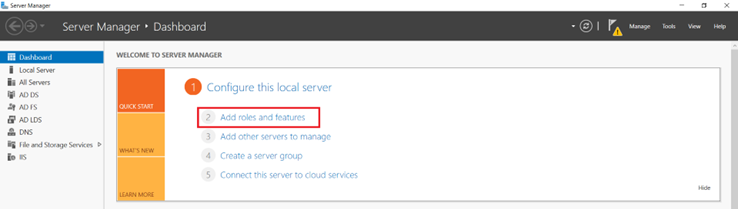2 After selecting Add Roles and Features, and Click on "Next".
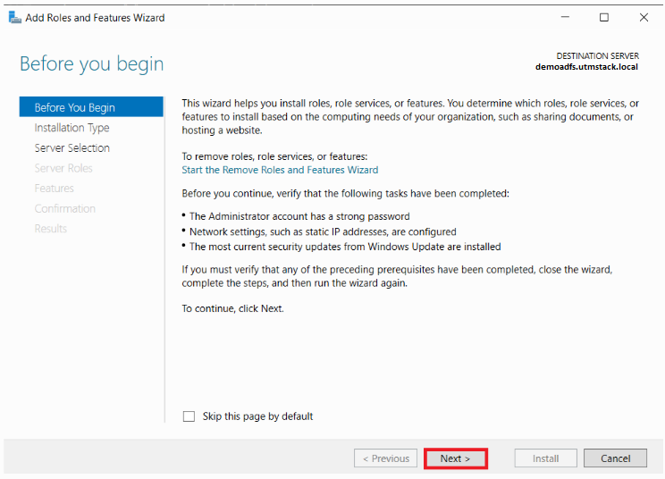3 Choose the Role-based or feature-based installation option and Click on the "Next" button
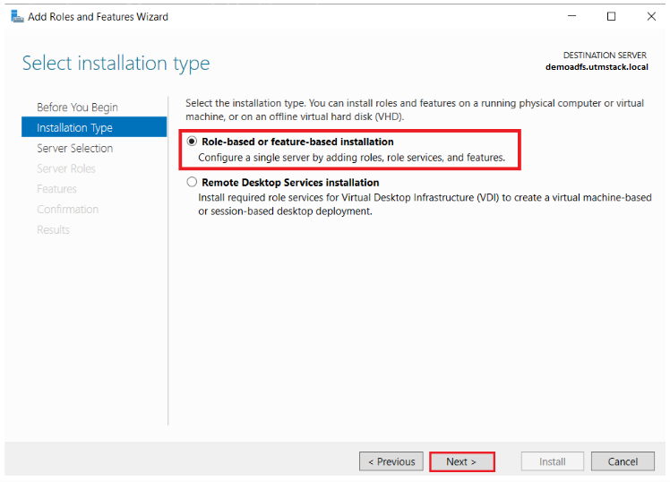4 Choose the Select a server from the server pool option & Select ldap server from the server pool, and click on the "Next" button
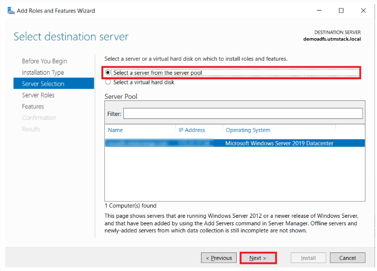5 Choose Active Directory Certificate Services option from the list of roles, and click on the "Next" button.
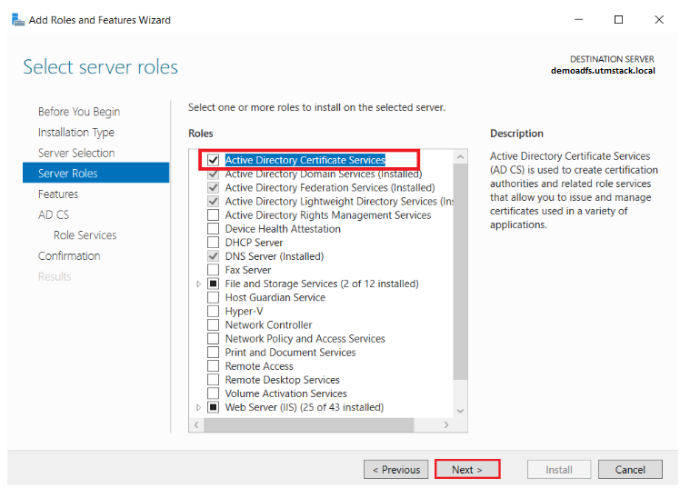6 Leave the features list as is, and click on the "Next" button.
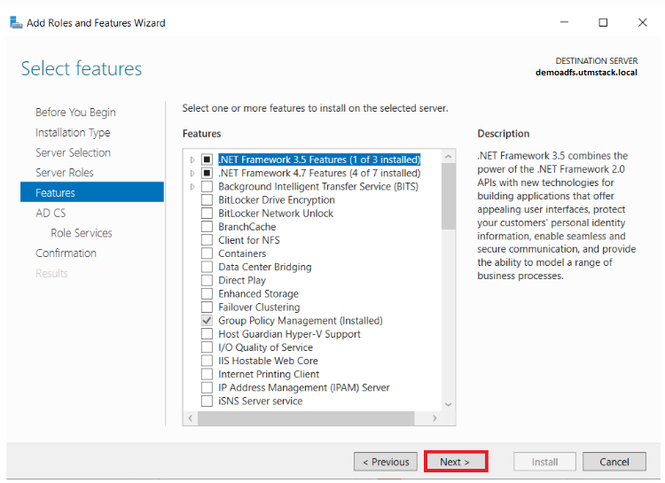7 In Active Directory Certificate Services (AD CS) choose nothing, and Click on the "Next" button.
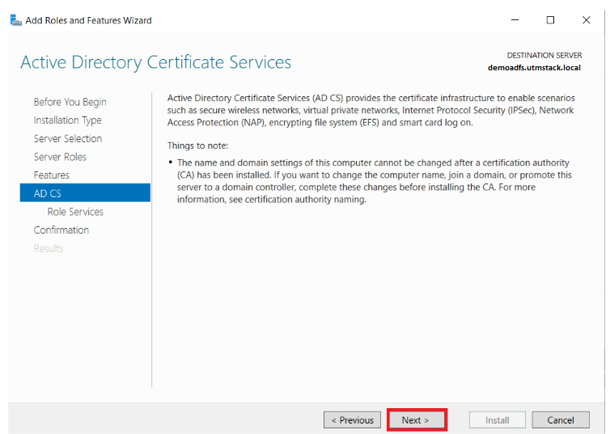8 Select Certification Authority from the list of roles, and click on the "Next" button.
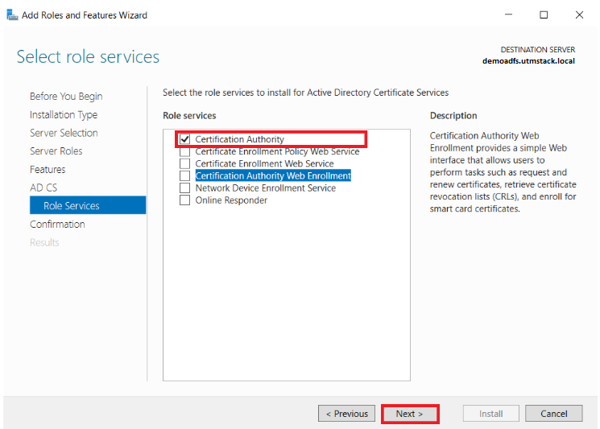9 Click on the "Install" button.
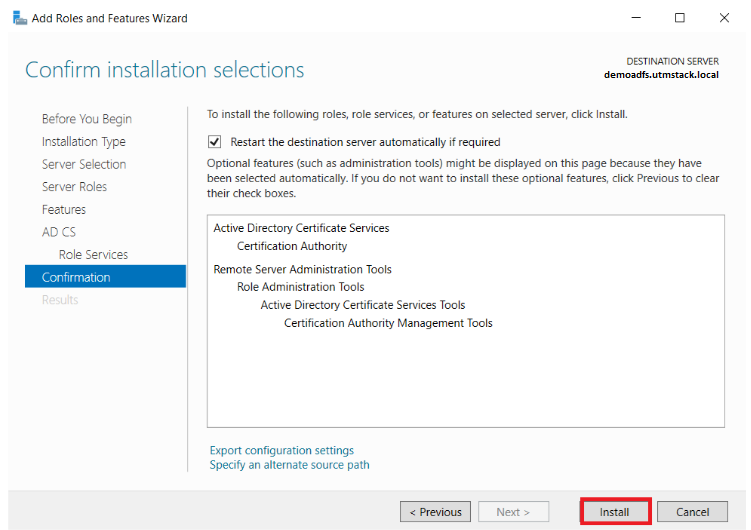10 Click on "Configure Active Directory Certificate Services on Destination Server" option, and click on the "Close" button.
11 Specify the credentials in the AD CS Configuration
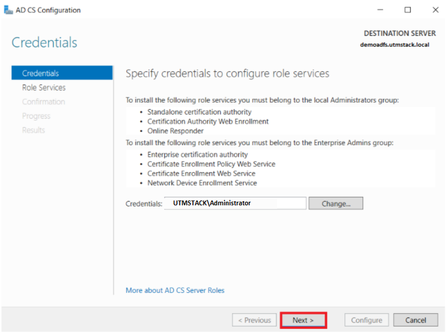12 Select Certification Authority, and click on the "Next" button.
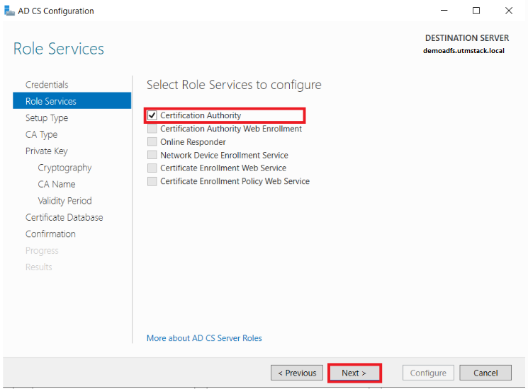13 Choose the Enterprise CA option, and click on the "Next" button.
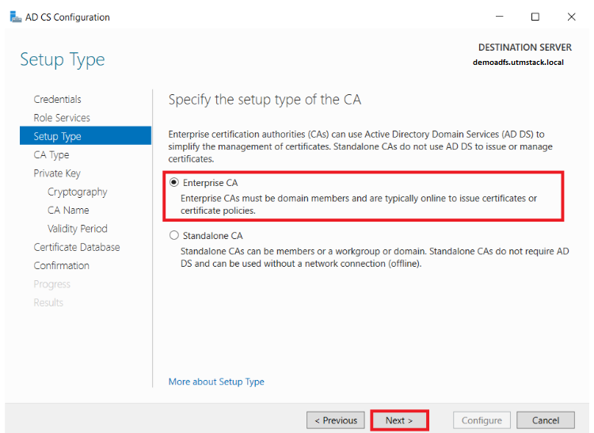14 Choose the Root CA option, and click on the "Next" button.
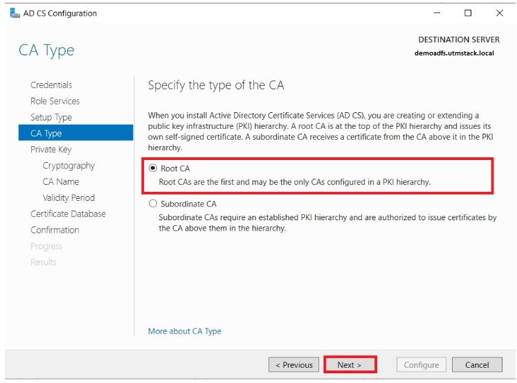15 Choose the Create a new private key option and click on "Next" button.
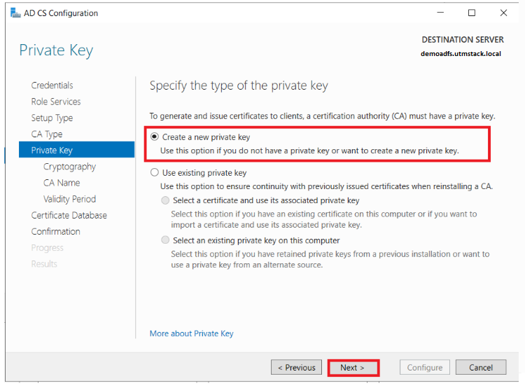16 Choose the SHA256 option as the hash algorithm and click on "Next" button.
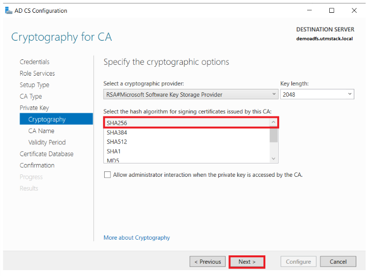17 Review the data generated, and click on the "Next" button
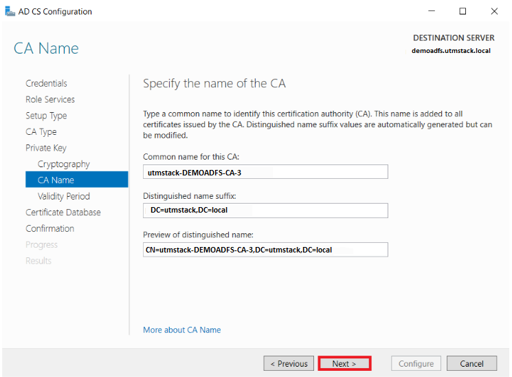18 Specify the certificate's validity, and click on the "Next" button.
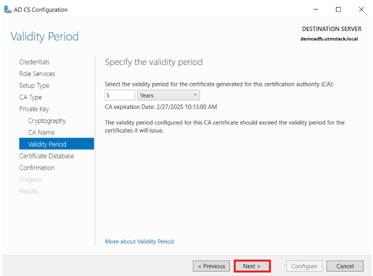19 Select the database location and click on the "Next" button.
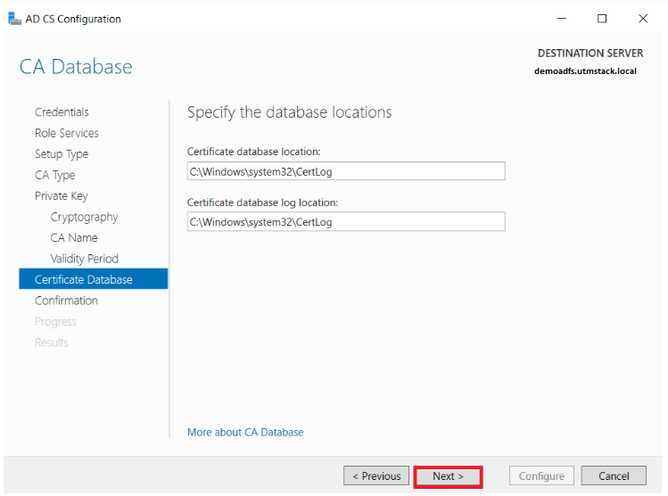20 Click on the "Configure" button to confirm.
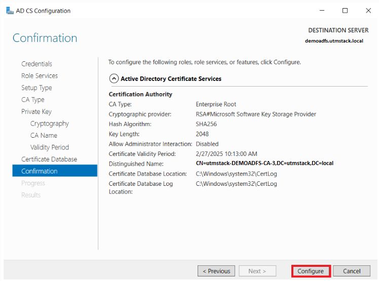21 Once the configuration succeeded and click on the "Close" button.
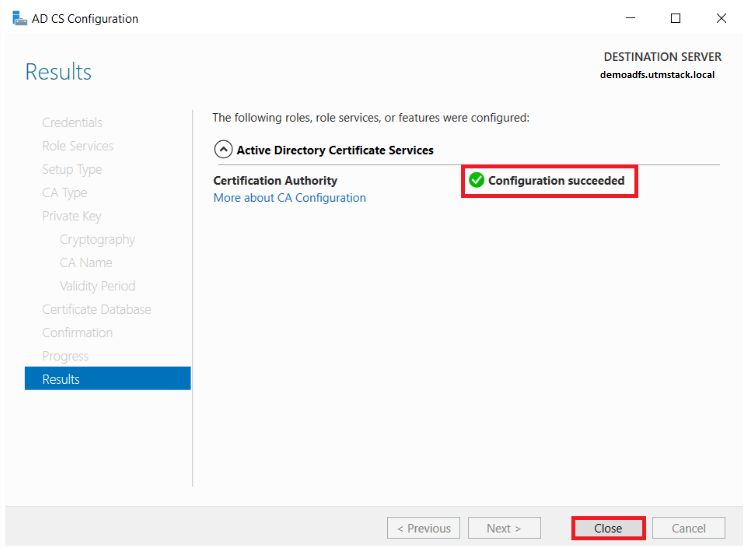22 Open a Windows command prompt.
23 Run the command:
The result will look like:
24 Enter AD Auditor connection info
25 Click on the button shown below, to activate the UTMStack features related to this integration